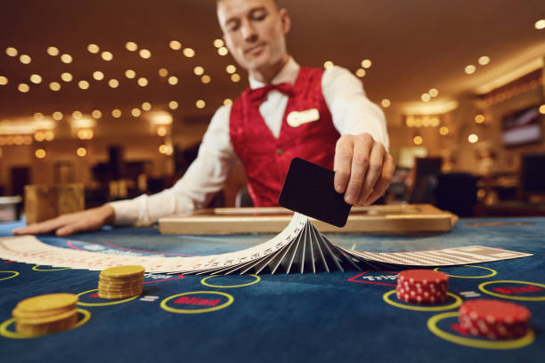

Croupier
Em alguns casos conhecido como Dealer
Croupier é o profissional de cassino responsável por garantir que todas as
apostas sejam feitas antes que as cartas
sejam distribuídas, coletar apostas perdedoras, calcular as probabilidades de
ganhar apostas, observar e faz cumprir todas
as regras durante o jogo e explicar as regras para novos jogadores.
Originalmente, um croupier significava aquele que estava atrás de um jogador,
com reservas extras de dinheiro para apoiá-lo
durante uma sessão de jogo. A palavra derivava de crupe (a garupa de um cavalo)
e era por analogia com aquele que cavalgava
atrás a cavalo. Mais tarde, passou a se referir a alguém que era empregado para
coletar o dinheiro de uma mesa de jogo.
Na América do Norte, o blackjack é quase sempre o jogo que os croupiers
aprendem primeiro, pois é simples e popular,
e quando o croupier comete erros, eles tendem a não custar muito
dinheiro ao cassino. Na Europa, os croupiers
tendem a aprender a roleta primeiro.
Faculdades selecionadas e instituições de ensino de terceiro nível não
universitários agora oferecem cursos
de treinamento de croupiers. Além de cursos, há uma série de aulas
particulares disponíveis nas mídias sociais,
fóruns de pôquer e seções de classificados em todo o mundo, que podem
servir ainda melhor do que participar de
um curso oficial.
Os cassinos também podem oferecer um programa de treinamento interno. No
entanto, às vezes é melhor obter uma
"qualificação geral" do que ser treinado exclusivamente no modo de
operação de uma empresa. Os empregadores em
potencial geralmente preferem candidatos sem experiência a um candidato
experiente.
Croupiers americanos, australianos, canadenses e britânicos são obrigados
a solicitar uma licença de jogo.
Esta licença inclui verificações de antecedentes policiais e
verificações de classificação de crédito, para ajudar
a determinar se eles são elegíveis para iniciar o emprego. Croupiers não
estão autorizados a negociar em um cassino até
que esta licença seja emitida.

Baralho Normal
Baralho normal de 52 cartas, de 4 naipes
O baralho de 52 cartas de naipes franceses é o baralho de cartas mais comum usado
hoje. Nos países de
língua
inglesa é o único baralho tradicional usado para jogar cartas. O padrão mais comum
em todo o mundo e
o único padrão comumente disponível
na Grã-Bretanha e na América é o pacote de padrões em inglês. O segundo mais comum é
o padrão
belga-genovês, desenhado na França, mas
cujo uso se espalhou pela Espanha, Itália, Império Otomano, Bálcãs e grande parte do
Norte da África
e Oriente Médio. Além desses,
existem outros grandes padrões internacionais e regionais.
As cartas de baralho modernas carregam etiquetas de índice em cantos opostos ou em
todos os quatro
cantos para facilitar a identificação
das cartas quando elas se sobrepõem e para que pareçam idênticas para jogadores em
lados opostos.
Para as cartas de Ás e da corte, esta etiqueta
é a letra inicial ou letras do nome dessa carta.
Nos países de língua inglesa, eles são rotulados como A (Ace), K (King), Q (Queen) e
J (Jack)
A Alemanha usa A (Ass), K (König), D (Dame) e B (Bube)
A Rússia usa as letras cirílicas Т (Tuz), К (Korol), Д (Dama) e В (Valet)
A Suécia usa E (Ess), K (Kung), D (Dam) e Kn (Knekt)
França usa 1 (As), R (Roi), D (Dame) e V (Valet)
Durante o século 19, os fabricantes de cartões começaram a projetar cartões de duas
cabeças para que
os cartões pudessem ser prontamente
identificados, independentemente da posição em que estivessem. No caso das cartas da
corte, isso
implicava cortar a metade inferior da
imagem e substituí-la por uma cópia invertida da metade superior normalmente, mas
nem sempre, com
uma linha divisória horizontal ou
inclinada entre as duas metades. Hoje, embora ainda existam padrões de uma cabeça de
cartas de
naipes alemães e latinos, as cartas
modernas de naipes franceses são invariavelmente duplas. Embora os baralhos de 52
cartas de naipes
franceses sejam as cartas de baralho mais
comuns usadas internacionalmente, há muitos países ou regiões onde o tamanho
tradicional do baralho
é de apenas 36 (Rússia, Baviera) ou 32
(norte e centro da Alemanha, Áustria) ou onde os cartas com pacotes menores são
preferidas para
muitos jogos. Por exemplo, pacotes de naipes
italianos de 40 ou 48 cartas são comuns na Itália; Pacotes de naipes espanhóis de 40
e 48 cartas na
Península Ibérica; e pacotes de 36 cartas
de naipes alemães são muito comuns na Baviera e na Áustria.
O pacote de padrão inglês originou-se na Grã-Bretanha, que importava cartas de
baralho francesas de
Rouen e Antuérpia em 1480. As primeiras
cartas do padrão inglês datam de cerca de 1516. Mas a Grã-Bretanha só começou a
fabricar suas
próprias cartas no final do século XVI, quando
o cartão a produção começou em Londres. Estes foram baseados no padrão de Rouen, mas
ao contrário
das cartas tradicionais francesas, eles
descartaram os nomes nas cartas da corte. O padrão inglês evoluiu, perdendo um pouco
do sabor e
elegância de Rouen e tornando-se cada vez
mais estilizado. As figuras ocupavam mais espaço nas cartas e muitos detalhes eram
distorcidos.
Todas as primeiras cartas desse tipo eram de uma cabeça,
mas por volta de 1860, as cartas de duas cabeças, universalmente usadas nos baralhos
modernos,
apareceram. Os índices de canto foram adicionados por
volta de 1880. Durante o século 19, o padrão inglês se espalhou por todo o mundo e
agora é usado em
quase todos os lugares, mesmo em países onde os
padrões tradicionais e outros ternos são populares. Na América, o padrão inglês foi
copiado em
cartas mais largas. O design fantasioso e o logotipo
do fabricante comumente exibidos no ás de espadas começaram sob o reinado de Jaime I
da Inglaterra,
que aprovou uma lei exigindo uma insígnia nessa
carta como prova de pagamento de um imposto sobre a fabricação local de cartões. Até
4 de agosto de
1960, os baralhos de cartas impressos
e vendidos no Reino Unido estavam sujeitos a impostos e o ás de espadas trazia a
indicação do nome
do impressor e do fato de que os impostos haviam
sido pagos sobre as cartas.
Baralho Espanhol
Podendo ser de 40 ou 48 cartas
O baralho espanhol consiste em um maço de 40 ou 48 cartas, classificados em 4
"naipes" e numerados
de 1 a 12 (no de 40 cartas, faltam o 8 e o 9). Certos maços incluem a mais 2
curingas ou "comodines".
As figuras do baralho espanhol correspondem aos números 10, 11 e 12, e são chamados
sota (mais conhecido
como valete), cavalo e veia respectivamente. No baralho francês, correspondem ao
valete, dama e rei, respectivamente.
Os quatro naipes são: ouros (♢), espadas (♤), copas (♡) e bastões (♧). Para certos
jogos se dividem em naipes curtos
(ouros e copas) e largos (bastões e espadas), como nos jogos hombre e tresillo.
Tarot
Usado para jogos e cartomancia
O tarot é um baralho de cartas, usado desde meados do século XV em várias partes
da Europa para jogar jogos como tarocchini italiano,
tarot francês e o Austríaco Königrufen, muitos dos quais ainda são jogados hoje.
No final do século 18, alguns baralhos de tarot
começaram a ser usados para adivinhação através da leitura de cartas de tarot e
cartomancia levando a baralhos personalizados desenvolvidos
para tais propósitos ocultos.
Como as cartas de baralho comuns, o tarot tem quatro naipes que variam de acordo
com a região: naipes franceses no norte da Europa,
naipes latinos no sul da Europa e naipes alemães na Europa Central. Cada naipe
tem 14 cartas: dez cartas numeradas de um (ou Ás) a
dez, e quatro cartas de figuras (Rei, Dama, Cavalo e Valete). Além disso, o tarô
tem um naipe de trunfo de 21 cartas separado
e uma única carta conhecida como o Louco. Esta seção de 22 cartas do baralho de
tarot é conhecida na cartomancia como os Arcanos
Maiores. Essas cartas de tarot ainda são usadas em grande parte da Europa para
jogar jogos de cartas convencionais sem associações ocultas.
Entre os países de língua inglesa onde esses jogos não são tão amplamente
jogados, as cartas de tarot são usadas principalmente para fins
de adivinhação, geralmente usando pacotes especialmente projetados. Alguns que
usam o tarot para cartomancia acreditam que
as cartas têm ligações esotéricas com o antigo Egito, Irã, a Cabala, o Tantra
Indiano ou o I Ching, embora pesquisas acadêmicas tenham
demonstrado que as cartas de tarot foram inventadas no norte da Itália no século
XV e confirmaram que não não há evidência histórica do
uso do tarot para adivinhação até o final do século 18.
JavaScript
Pescar cartas
Clique nos botões abaixo para pescar as cartas de diferentes baralhos
JavaScript
Criar cartas
Insira as informações para criar uma carta
|